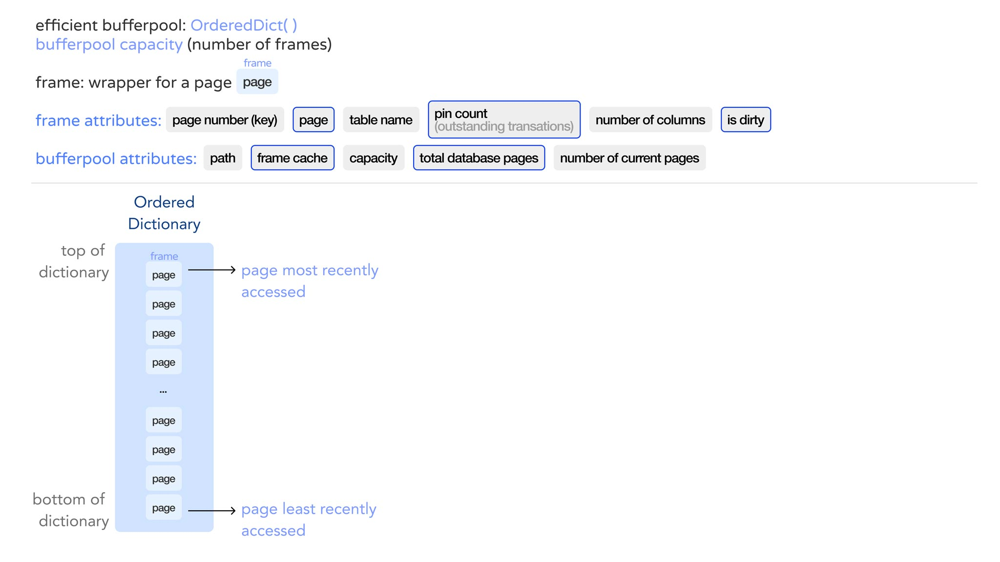
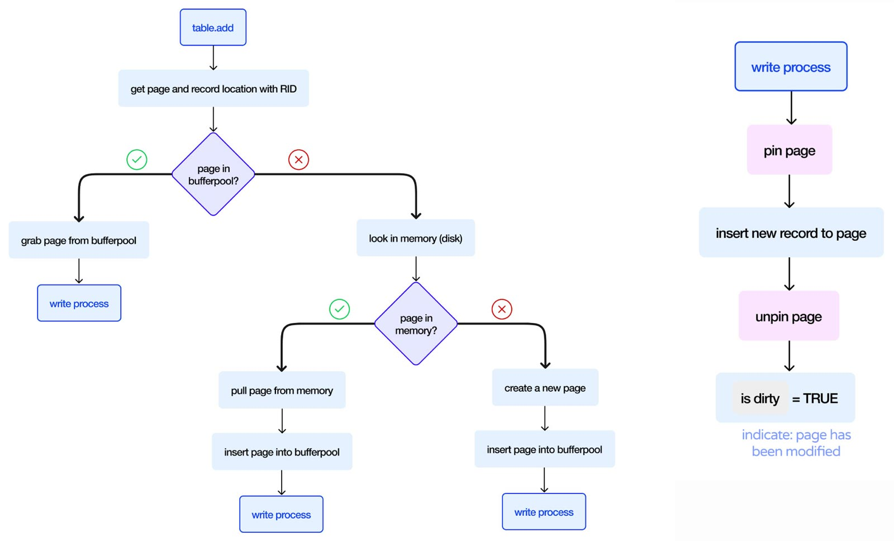
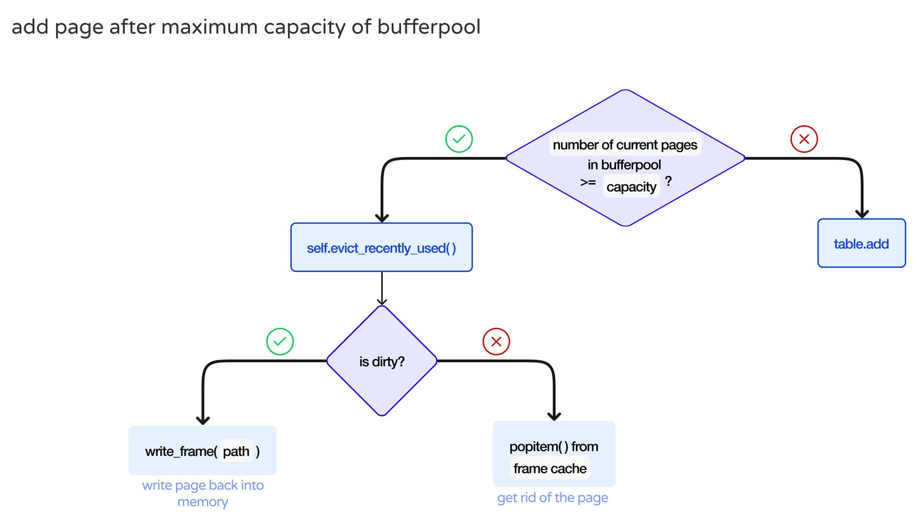

Weather Search Experience
Bing Weather Answer Mobile Design
Tools: Adobe Illustrator, Figma
PROCESS
Due to the time constraint of this project, I had to make decisions about what design features to trade-off in order to prioritize the most important components needed by users. I started off with trying to understand user needs and analyzing current weather answer solutions by competitors. Then I created lo-fi wireframes to map out the information architecture and design patterns. Finally, I created a hi-fi prototype with horizontal scrolling interactions.
Problem Space
CURRENT SOLUTION
As of August 9, 2021, cn.bing.com currently does not have a weather answer in response to “location + weather” searches.
User Research
RESEARCH GOALS
- Learn about our potential users’ needs
- Understand current solutions by competitors
ASKING THE RIGHT QUESTIONS
- Why do you search for the weather?
- What information do you primarily look for when searching about weather?
- What features/information would you remove on the weather answers?
- Is there a feature that you hoped weather answers/apps would have?
KEY QUALITATIVE USER RESPONSE INSIGHT
To make better design decisions, I will highlight some common patterns I noticed from the user responses I conducted:
- Users’ major goal is to check out the temperature
- Secondly, they want to know the weather, if it is sunny or not, and if it rains how heavy the rain is
- The incentive behind searching about weather on search engines is to:
- a. Going out now and want to know the current temperature
As the team coordinator, I divided programming responsibilities and fostered collaboration, illustrated high-level architecture, generated detailed program logic flows using Figma and Adobe Premiere for better demonstration, oversaw project progress and helped implement functions.
Bufferpool Setup
We efficiently implemented the bufferpool with Ordered Dictionary, which tracks the insertion order and is fast at lookup operations. It takes O(1) for lookups by index, and O(1) for lookups by key. Moreover, OrderedDict has O(1) for getitem, setitem, and delitem just like regular dictionaries, which makes it scale very well.
Bufferpool has a capacity of frames, which is the wrapper for a page.
The class frame has the following attributes:
“pin count” keeps track of transaction number, and the boolean “is dirty” represents if a page has been modified.
The class bufferpool has the following attributes:
“path” is the page path to memory (or disk), “frame cache” is just itself the bufferpool, “number of current pages” is compared with “capacity” to check if the bufferpool reached maximum capacity.
When we add a page to bufferpool, we put it inside a frame and place it at very top of the ordered dictionary. The most recently accessed page is at the top, and the least recently accessed page is at the bottom of the bufferpool. Page accessed the longest time ago is at the back of the dictionary (like a queue).
Animated Bufferpool Execution
Functions Logic Flow
Table.add and Pinning
The table.add function inserts a new record. First, we find the page location of the record with RID (using page directory we find page number), then we use page number as key to see if page is in bufferpool.
If in buffer pool, grab page from buffer pool so that we can write to it. If not, we have to look in memory (which is the disk since were persisting all on disk).
If this page exists on memory, we pull from memory, and now we have the page to write to it. If page does not exist in memory, we create a new page and write to it.
Any time we write to a page, we first pin the page and increase pin count, write to it, done writing we unpin the page,
Evict Page
After we're done writing to a page, we set dirty bit to true since it is modified. This process repeats itself. If we’ve reached maximum capacity in buffer pool and want to add one more, we would have to evict a page.
The eviction process goes as follows: check if it’s dirty. If yes, write that page back into memory; if not, get rid of it (since all we did was read, not modify).
Implementing Durability: Storing Records to Disk
Page Allocation and Writing
Merge
When certain number of updates has been done, we perform merge on the background thread so that writing and reading pages can occur concurrently.
QueCC
QueCC is a Queue-oriented Control-free Concurrency Architecture. We incorporated QueCC with the goal of abandoning complex concurrency.
Aggregating Transaction List
Planning Stage
In this stage, we split the transaction list evenly depending on how many planning threads we have. Once we pass those transactions into the planning thread, each transaction is made up of queries. We take a look at each query which each works on a certain record, take the RID as the key and modulo it by the number of queues in planning thread. This places all the operations for a certain record into the same queue, and place all operations of 0th oeperaction to 0th queue. Finally, planning threads take transactions and separate queries into queues.